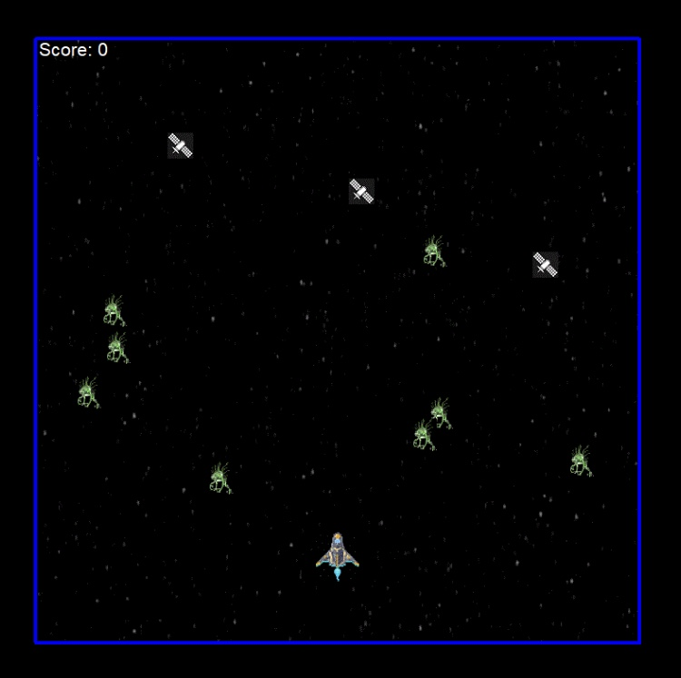

Space Vanquishers
EMERGENCY WARNING: You are traveling through space and are trying to find your way back, but there are aliens in your way trying to stop you! The objective of the game is to shoot down all the aliens before they reach your ship or the bottom of the screen. You can move the ship by pressing"a,d,w,s", and fire lazers with the spacebar. You get a point for every alien hit but avoid hitting satellites or they will take away from your score!

Cross the Road
Attempt your luck and cross the road! The player has 30 seconds to move across the roads towards the green bar as fast as possible. Each time the player has reached the end one point is rewarded. But be cautious! If a a car is hit, the player will be reset back to the starting point.
EMERGENCY WARNING: You are traveling through space and are trying to find your way back, but there are aliens in your way trying to stop you! The objective of the game is to shoot down all the aliens before they reach your ship or the bottom of the screen. You can move the ship by pressing"a,d,w,s", and fire lazers with the spacebar. You get a point for every alien hit but avoid hitting satellites or they will take away from your score!